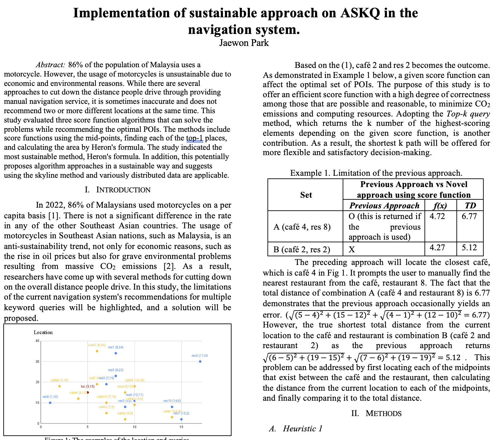

ASKQ Navigation
ASKQ Navigation is a sustainable campus routing prototype designed to balance travel efficiency with environmental and accessibility factors. The project uses score functions and Heron’s formula to create routes that minimize energy and maximize inclusivity.
Project Report
You can view or download the full report below:
Download Project Report (DOCX)